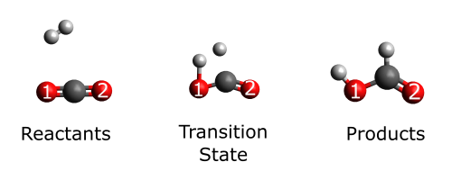

Reaction Fragility Spectrum¶
General Theory¶
While atomic contributions to the reaction force and reaction force constant can be beneficial in tracking the breaking/formation of chemical bonds in simple reaction systems, it is limited in its application because the changes in both are often dominated by the change in position of the atom rather than its actual participation in a bond. In other words, for more complex cases it is difficult to discern the difference between the elongation/shortening of a bond and true bond breaking and formation for different types of atoms. The reaction fragility spectrum is better able to discern this difference by making use of the coupled normal modes of the molecular Hessian to obtain a quantitative measure of the bonding status of individual atoms in a molecule. If we consider a molecular system composed of \(N\) atoms, the Hessian matrix element for the interaction between atoms \(i\) and \(j\) is defined by the following mixed partial derivative:
\[k_{ij} = \left(\frac{\partial^2 E}{\partial R_i \partial R_j}\right),\]
where \(E\) is the total molecular energy while \(R_i\) and \(R_j\) represent the cartesian position (\(R_x\), \(R_y\), \(R_z\)) of atoms \(i\) and \(j\) respectively. Given the three cartesian coordinates, this would compose a \(3N \ \times \ 3N\) Hessian matrix (\(\mathbf{K}\)). Every \(3 \ \times \ 3\) square matrix block along the block diagonal of the Hessian matrix is related to the individual atoms in the molecule. The trace of the Hessian is invariant to changes in coordinate and responds to changes in bonding structure of the molecule. The trace of each individual square block is that atoms contribution to the bonding pattern, this naturally lends itself to an atomic decomposition:
\[{\rm Tr} \ \mathbf{K} = \sum^N_A {\rm Tr} \ \mathbf{k}^A,\]
where \(\mathbf{k}^A\) is the square block diagonal matrix related to atom \(A\). Any decrease (increase) in the trace of \(\mathbf{k}^A\) corresponds to the weakening (strengthening) of a bond. The reaction fragility spectrum (\(a_{\xi}\)) tracks the change in this contribution as the reaction proceeds, it does this by investigating the derivative of the trace of the Hessian as the reaction progresses:
\[a_{\xi} = \frac{\partial}{\partial \xi}({\rm Tr} \ \mathbf{K}) = \sum^N_A \frac{\partial}{\partial \xi} {\rm Tr} \ \mathbf{k}^A = \sum^N_A a^A_{\xi},\]
where (\(a^A_{\xi}\)) would be the atomic fragility spectrum for atom \(A\). By utilizing the invariant trace of the Hessian rather than atomic contributions to the total energy, the fragility spectrum represents a tool that is less sensitive to nuclear motion and more akin to bond indices.
Example¶
The example below is an input file to calculate the reaction fragility spectrum for the reaction of carbon dioxide and the hydrogen molecule. The “do_fragility_spec” keyword is added to the “pyrex” block in order to calculate the fragility spectrum:
{
"molecule": {
"symbols": ["C","O","O","H","H"],
"molecular_charge": "0",
"molecular_multiplicity": 1
},
"model": {
"method": "scf",
"basis": "sto-3g"
},
"pyrex": {
"nthreads": 4,
"irc_filename": "full_irc.xyz",
"do_energy" : true,
"energy_read" : "energy.csv",
"do_fragility_spec" : true,
"irc_stepsize": 0.2
}
}
the “energy_read” keyword is added in this case so that the total energies can be read in from a previously calculated file, avoiding the need to recalculate the energy. This calculation will produce a file called “frag_spec.csv”, that will contain the atomic fragility spectrum for each atom in the molecule. To highlight this method, we will take a look at the fragility spectra for the two oxygens, the figure below shows the molecular structure of the reactants, transition state, and product for this reaction:
{kind=link}
Notice that O1 forms a new bond with a hydrogen atom while O2 does not, based on our understanding of the reaction fragility spectrum we would expect a much larger change in this spectrum for O1 when compared to O2. However, we will have to investigate this to find out. Using the plotting utility, we can directly plot the two atomic fragility spectra on the same plot using the following input:
{
"rexplot" : {
"file" : "frag_spec.csv",
"properties" : ["O1", "O2"],
"coordinate" : "Coordinate",
"x_label" : "Reaction Coordinate ($\\xi$)",
"y_label" : "$a_{\\xi}$",
"fig_dims" : [9.0, 5.0],
"plot_file" : "frag_spec.png"
}
}
This will produce the following plot of both atomic fragility spectra:

As you can see the fragility spectrum for O1 modulates much more than that of O2, indicating the initial weakening of the C-O bond to form the transition state and the final formation of the O-H bond in the product.
Caution
Since the reaction fragility spectrum involves explicit calculation of the full Hessian Matrix at every point along your coordinate these calculations can be rather expensive even for a modest sized system. Have realistic expectations when it comes to computational cost for these calculations.